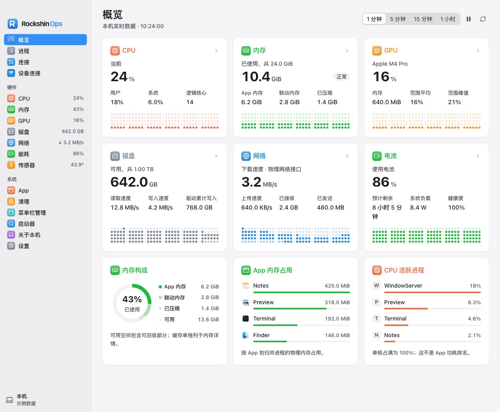
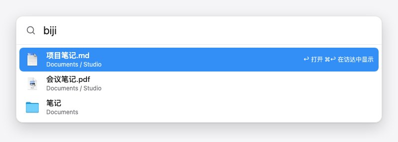
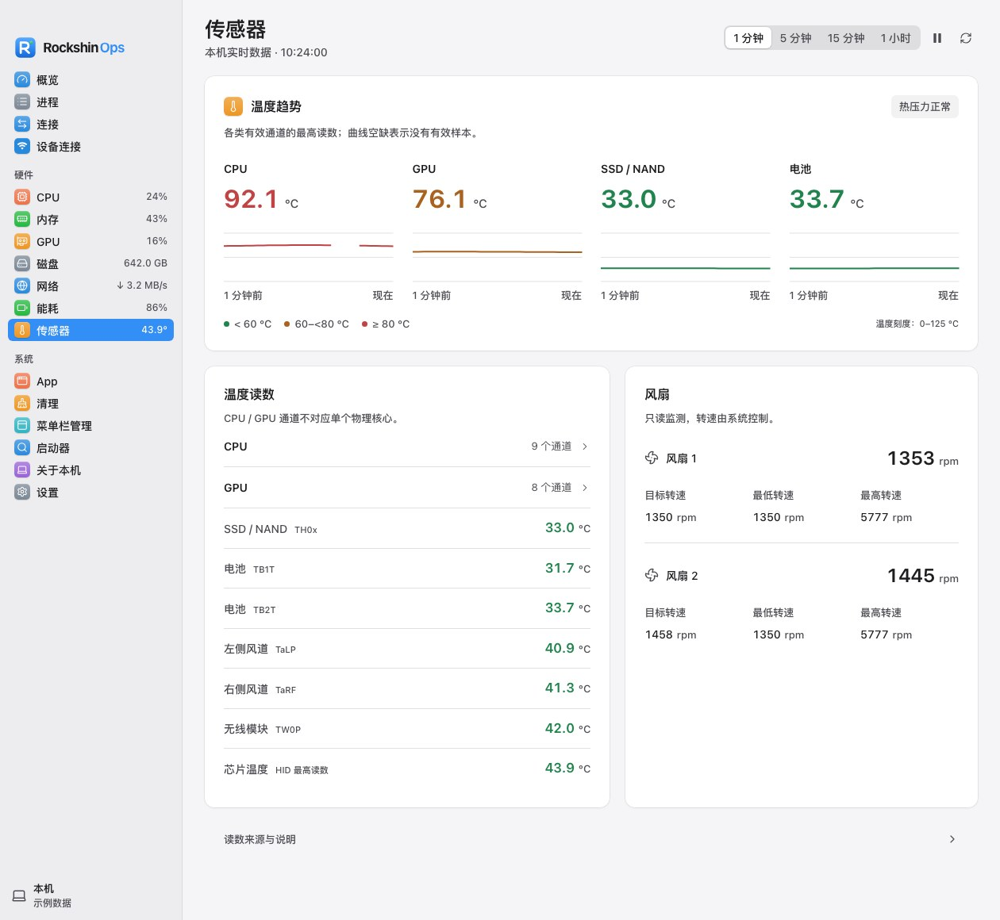
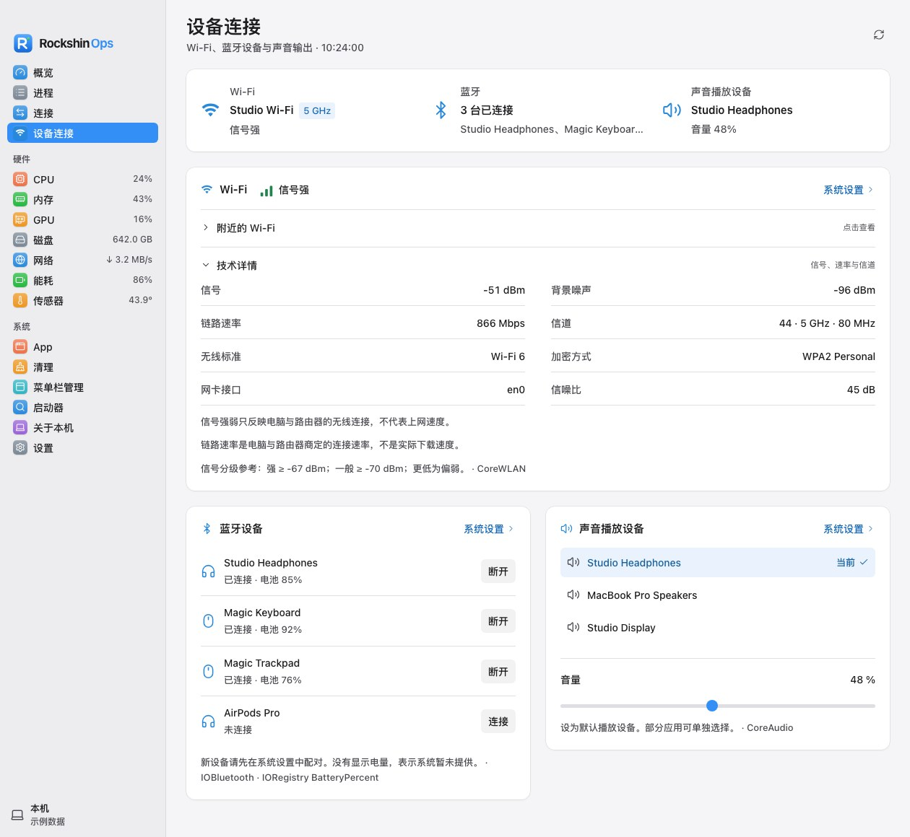

常驻菜单栏。
把想看的指标放进菜单栏。关闭窗口只是隐藏，原生采样不会中断。
免费开源的桌面工具箱。监控系统状态，用启动器搜索应用和文件，让 Mac 菜单栏井然有序。
· 选择其他版本

应用和本地文件名一起搜。输入名称、几个首字母或中文拼音，找到就打开，不必逐层翻找文件夹。
启动器默认关闭；在应用中启用并设置你的快捷键。

从实时系统监控出发，快速打开应用和文件、整理菜单栏、定位繁忙进程，再看清磁盘空间去向。
把想看的指标放进菜单栏。关闭窗口只是隐藏，原生采样不会中断。
系统读数和文件搜索都留在本机。无需账户，无需托管监控服务，指标历史只保存在内存中。
按资源排序进程、按应用汇总占用，查看 TCP / UDP 连接。开发者端口支持查看监听服务、收藏常用端口和复制地址。
扫描磁盘占用、浏览大文件与文件夹，核对所选项目后移入废纸篓。macOS 还可查看应用及其可能的关联文件。
v0.2.12 新增 macOS 传感器与设备连接页面，集中查看硬件读数与日常连接。
CPU、GPU、SSD 与电池温度趋势、分色读数、系统热压力和详细风扇转速集中呈现。缺失读数明确标记，实际可用性取决于 Mac 机型。

同一页面查看 Wi-Fi 信号与附近网络、已配对蓝牙设备、声音输出及音量。网络名称和扫描需要定位权限；电量仅在设备提供时显示。

macOS、Windows 和 Linux 均免费。无需账户，无需订阅。
支持 Apple Silicon 与 Intel
采用临时签名，尚未公证。
适用于 x86_64 电脑
安装包未签名，需要 WebView2。
适用于 x86_64 桌面
需要 GTK 3、WebKitGTK 4.1 和桌面托盘支持。
版本 0.2.14发行说明SHA-256 校验值
核心采集已在四个构建目标上测试。桌面交互已在 macOS Apple Silicon 验证；Windows/Linux 桌面交互及电池、GPU 实机覆盖仍在进行。GPU 与功耗读数取决于硬件和驱动支持。
不需要。RockshinOps 在本机读取系统指标，历史数据仅保留在本次运行的内存中。无需账户，也无需配置托管监控服务。
分析是只读的。你可以核对所选项目并将其移入系统废纸篓；清空废纸篓需要确认。macOS 还支持核对应用和可能的关联文件。退出和强制退出进程需要单独确认。
支持。应用默认跟随系统语言。也可以在设置中选择「跟随系统」「中文」或「English」，选择后自动保存。
可以。RockshinOps 采用 MIT 许可证，使用 Go、MyGo 和 TypeScript 构建。 在 GitHub 阅读源代码